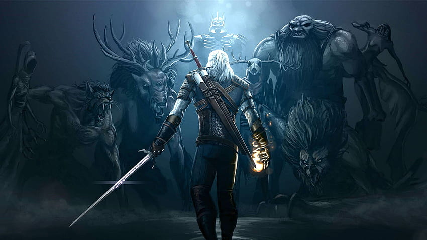

Welcome to the WitcherPedia,
a place where you can explore the world of the Witcher
This is a story about Geralt of Rivia, a brooding professional monster hunter for hire also known as witcher, struggles to keep his humanity in a medieval dark fantasy world ruled by corrupt kings, queens and mages, where poverty, violence and intolerance are rampant, normal humans are sometimes worse than actual monsters.

The Witcher Saga by Andrzej Sapkowski is a Polish fantasy series that has been translated into many
languages and adapted into both a popular video game series and a Netflix show.
But who are the characters behind the story? How are they all connected to one another?
And how do they fit into the overall Witcher narrative?
What countries do exist in this world? What monsters does Geralt have to fight?
If you're new to the series and looking for some background information about the characters, countries and more then you are on the right place.